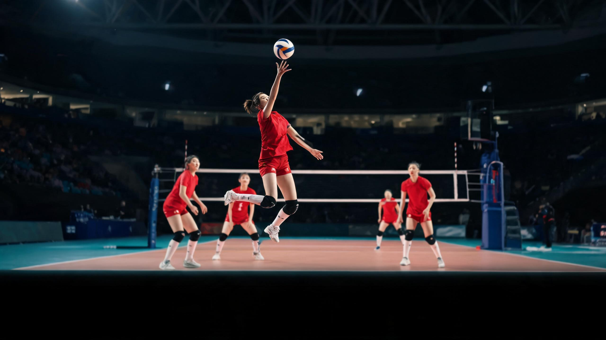
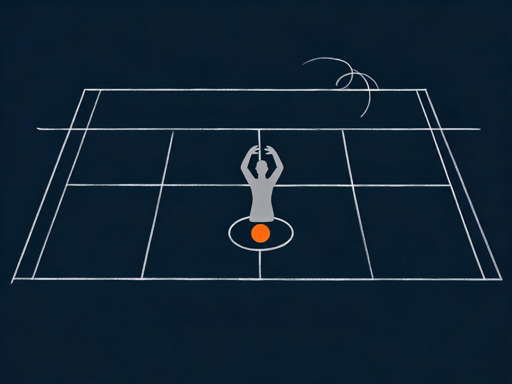
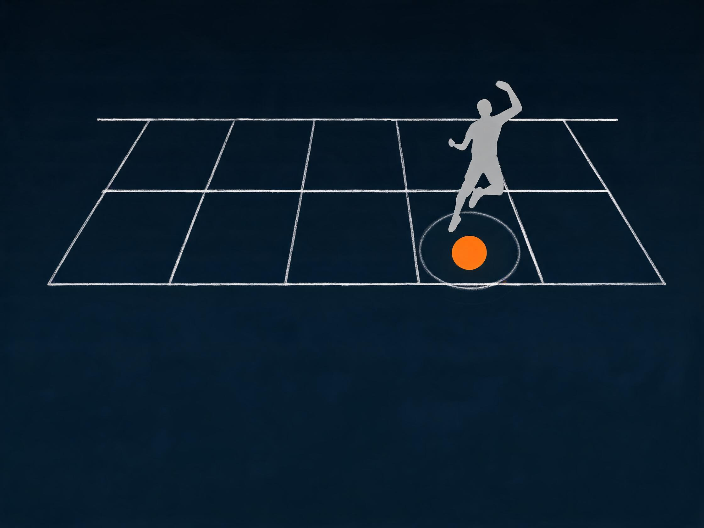

排球研习
VOLLEYBALL LAB
搜索位置、技术、术语
⌘K
排球新闻
全部
示例内容
校园体育
11-08
全国大学生排球联赛分区赛开赛

示例内容
排球观察
11-06
女排世联赛新周期名单公布，年轻主攻获征召
示例内容
规则解读
11-03
自由人规则再讨论：双自由人制度是否可行
示例内容
青训笔记
10-30
青少年训练：先练一传还是先练扣球
选择你的位置
4
主攻
OUTSIDE HITTER
四号位的第一进攻点

3
二传
SETTER
场上大脑，分配每一次进攻

2
接应
OPPOSITE
右翼火力，二传的替补二传
5
自由人
LIBERO
后排防线，接发球核心
TIP 01
一传别抬肘，前臂平面要“平”。